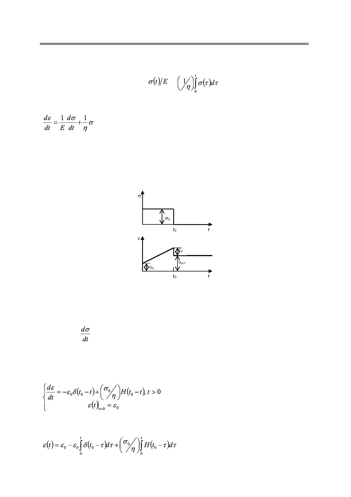

Новые функциональные соотношения для линейных реологических моделей Максвелла
и Кельвина-Фогта
Общая деформация складывается из деформации элементов ε = ε1 + ε2, то есть
ε (t) =
+
,
откуда после дифференцирования приходим к уравнению вида (1) для модели Максвелла
, t > 0.
(6)
Рассмотрим частные случаи для уравнения (6).
Постоянное напряжение (модель Максвелла)
Пусть в начальный момент времени (при t = 0) приложено постоянное напряжение σ0,
действующее до момента времени t0, после чего строятся графики зависимости напряже-
ния и деформации от времени (рис. 2).
Имеем:
Рис. 2. Графики зависимости напряжения и деформации от времени
в случае действия постоянного напряжения на модель Максвелла.
σ(t) = σ0Н(t0 – t), t > 0.
(7)
Так как
= – σ0δ(t0 – t),
где σ0 = Еε0,
ε0 – величина мгновенной деформации упругого элемента,
то (6) и (7) дают следующую задачу Коши:
(8)
решение которой, согласно (5), имеет вид:
.
(9)
54
Российский технологический журнал 2017 Том 5 № 5